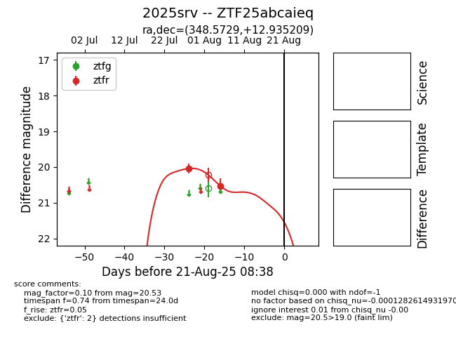

Target 2025srv at 2025-08-21 09:29, see:
FINK: fink-portal.org/ZTF25abcaieq
Lasair: lasair-ztf.lsst.ac.uk/objects/ZTF25abcaieq
ALeRCE: alerce.online/object/ZTF25abcaieq
TNS: wis-tns.org/object/2025srv
YSE: ziggy.ucolick.org/yse/transient_detail/2025srv
alt names
ZTF25abcaieq (ztf,alerce)
2025srv (tns,yse)
coordinates:
equatorial (ra, dec) = (348.5729,+12.93521)
galactic (l, b) = (89.3737,-43.51673)
photometry
last ztfr=20.53
2 ztfr detections
